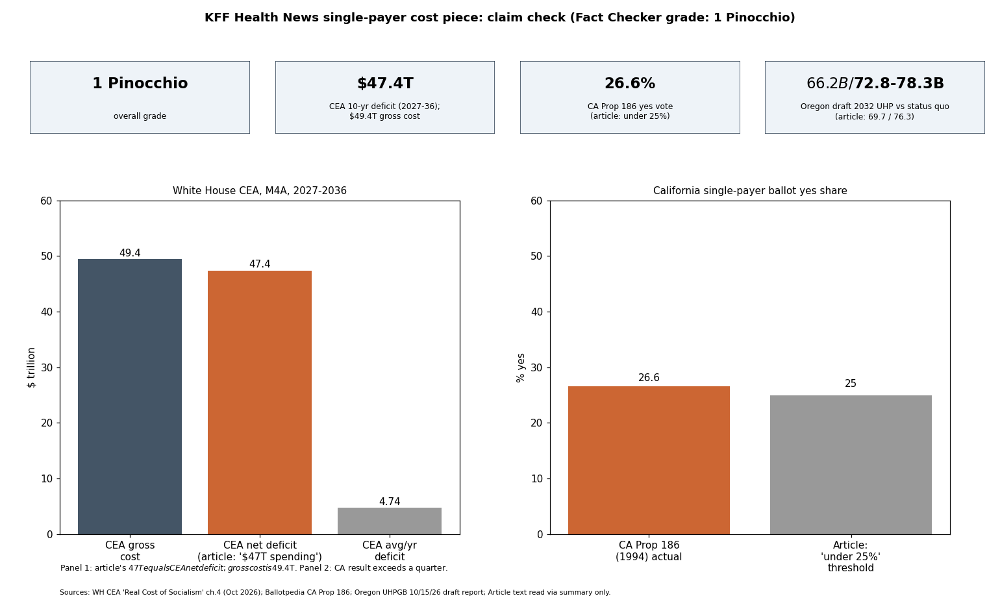

Mostly accurate, with two imprecise claims: 1 Pinocchio

Summary of findings
The piece (Markian Hawryluk, KFF Health News, Nov. 25, 2026) earns 1 Pinocchio. Most claims check out, but the "$47 trillion in federal spending" label is wrong (the CEA figure is a $47.4T net deficit over 2027-2036; gross single-payer cost is $49.4T), and "single-payer ballot measures in California, Massachusetts and Oregon each won less than a quarter" fails for California: Prop 186 (1994) got 26.6% yes.
- National health spending 2024 about $5.3T: confirmed (CMS actuaries, $5,278.6B). The 2025-2034 projection sums to roughly $72T, consistent with the article, though the article rightly notes it includes spending a plan would not replace.
- CEA "$4.7 trillion a year": not stated in the CEA report; it is the average annual deficit ($47.4T/10 = $4.74T). A derived figure, not a published one.
- Oregon $69.7B (UHP, 2032) and $76.3B (status quo): not checkable here. The Oct. 15, 2026 draft report shows UHP $66.2B with savings (Milliman best estimate $85.5B before savings) against status quo $72.8-78.3B. The final adopted numbers were not accessible and may differ from the draft.
- "Up to 3 in 5 pay less": the draft says most households would pay less in nearly every scenario; the specific 3-in-5 share not located.
- Vermont abandoned single payer in 2014: consistent with my knowledge; not re-verified this session.
- Oregon and Massachusetts ballot percentages: not verified. Massachusetts questions were non-binding district questions that mostly passed, so the Massachusetts claim looks doubtful.
- Misleading context: the CEA report is an administration advocacy document with productivity-loss assumptions; the piece reports it without noting that independent estimates are $25-36T over ten years (CRFB).
Caveat: I read the article only through a summarizing fetch tool, not verbatim, so quote-level checks were not possible.
Claim table
| Claim | Verdict | Source |
|---|
| US spending about $5.3T in 2024 | True | CMS/Health Affairs NHE projections 2025-34 |
| $47T federal spending over 10 years (CEA) | Mislabeled: net deficit $47.4T; spending $49.4T | WH CEA report ch. 4 |
| $4.7T per year | Derived average, not published | same |
| Oregon $69.7B / $76.3B | Not checkable (draft differs) | Oregon UHPGB draft 10/15/2026 |
| Ballot measures under a quarter | False for CA (26.6%); OR/MA unverified | Ballotpedia |
| Vermont 2014 | Plausibly true, not re-verified | - |
Sources
- https://kffhealthnews.org/health-industry/universal-healthcare-single-payer-medicare-for-all-costs-oregon-midterm-election/
- https://www.whitehouse.gov/wp-content/uploads/2026/10/The-Real-Cost-of-Socialism-In-America-Report-1.pdf
- https://www.oregon.gov/uhpgb/Documents/board-meetings/2026/20261015/20261015-legislative-report-draft.pdf
- https://www.healthaffairs.org/doi/abs/10.1377/hlthaff.2026.00642
- https://ballotpedia.org/California_Proposition_186,_Single_Payer_Healthcare_System_(1994)
- https://www.crfb.org/papers/choices-financing-medicare-all